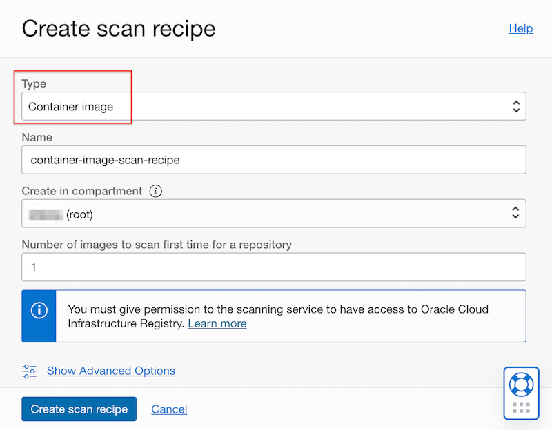
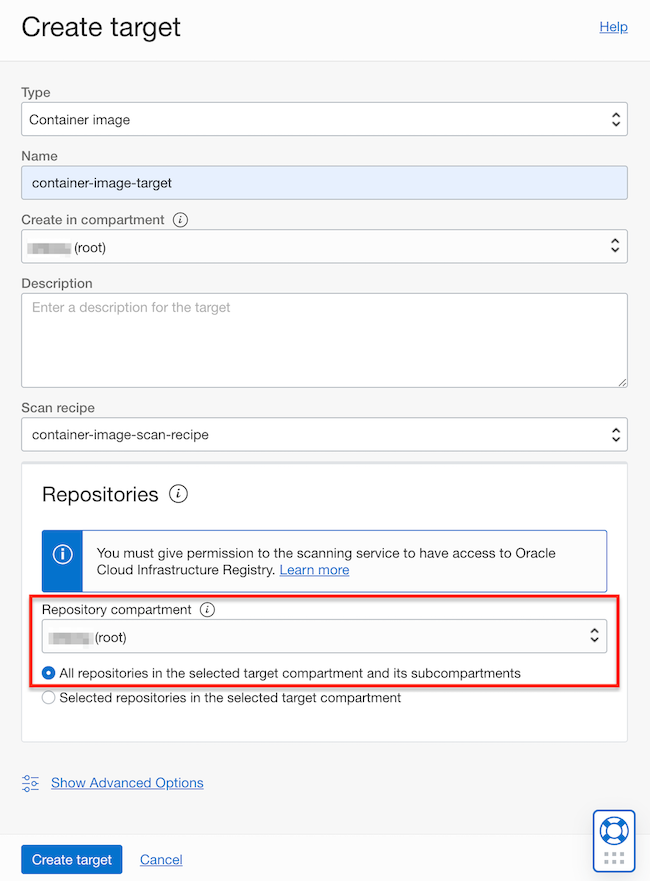
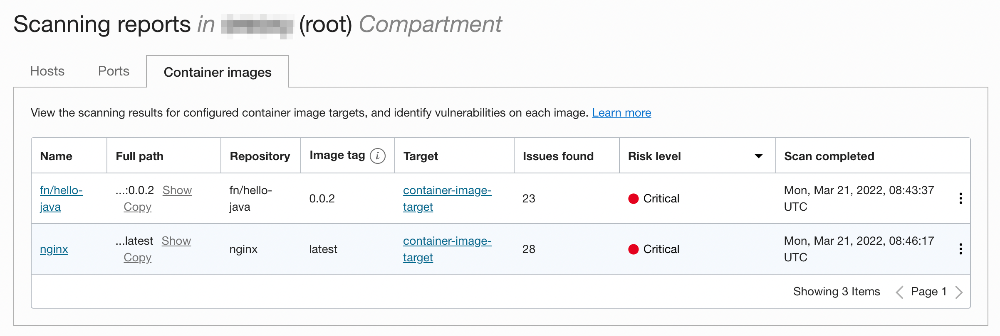
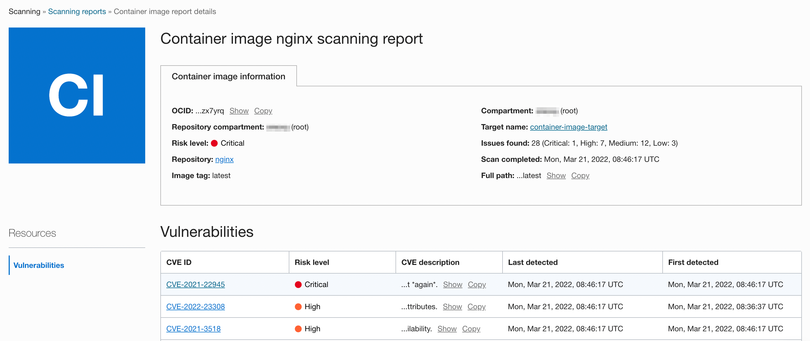
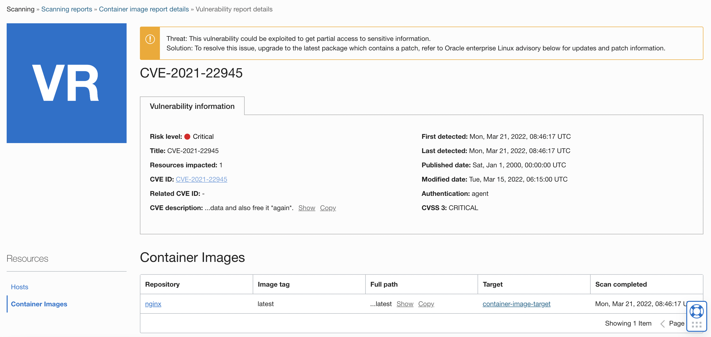
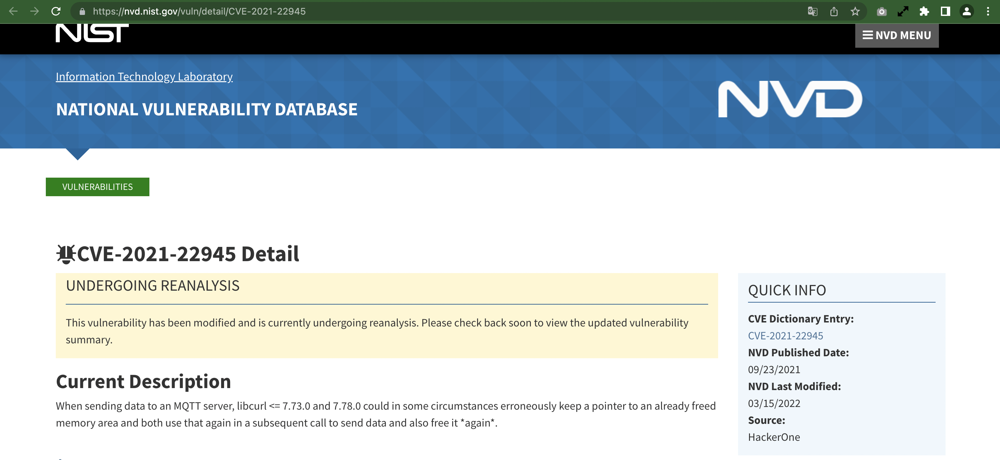
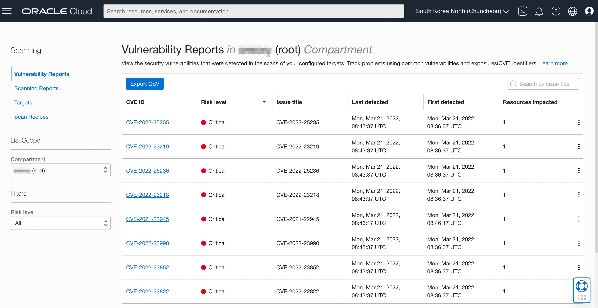

Container image scanning using the Console
OCIR에서 컨테이너 이미지 스캐닝 기능을 지원하고 있습니다. 이에 추가하여 Vulnerability Scanning 콘솔에서도 할 수 있게 기능이 추가되었습니다.
Container Image Scan Recipe 만들기
IAM 권한 설정
compartment 단위 또는 전체 테넌시 단위로 권한을 지정할 수 있습니다. 여기서는 전체 테넌시에 대해 Vulnerability Scanning 서비스가 이미지 리파지토리 및 compartment에 접근할 수 있는 권한을 부여합니다.
-
전체 테넌시
-
이름 예) ocir-scanning-images-root-policy
allow service vulnerability-scanning-service to read repos in tenancy allow service vulnerability-scanning-service to read compartments in tenancy
-
Container Image Scan Recipe 만들기
-
Oracle Cloud 콘솔에 로그입니다.
-
Identity & Security > Scanning > Scan Recipes 메뉴로 이동합니다.
-
Create를 클릭하여 이미지 스캔 레시피를 만듭니다.
-
이름 예) container-image-scan-recipe
-
Type: Container image

-
Container Image Target 생성
-
이미지 스캔 레시피 상세화면에서 Create Target을 클릭합니다.
-
컨테이너 이미지 타겟을 만듭니다.
-
이름 예) container-image-target
-
대상 Repository: 테넌시내 모든 Repository가 되도록 선택합니다.

-
스캐닝 리포트 확인
-
내비게이션 메뉴에서 Identity & Security > Scanning > Scanning Reports 메뉴로 이동합니다.
-
Container Image 탭으로 이동합니다.
-
스캐닝 된 이미지와 리포트를 볼 수 있습니다.

-
원하는 이미지의 이름을 클릭하면, 취약점 분석 결과를 볼 수 있습니다.

-
리스트된 취약점 중에 하나를 클릭합니다. 해당 취약점 기준으로 해당 취약점이 있는 호스트, 컨테이너 이미지 내역을 볼 수 있습니다.

-
CVE ID를 클릭하면, 취약점을 관리하는 원 데이터베이스에서 상세 정보를 확인할 수 있습니다.

취약점 리포트 확인
-
내비게이션 메뉴에서 Identity & Security > Scanning > Vulnerability Reports 메뉴로 이동합니다.
-
취약점 ID 기준으로 리포트를 볼수 있습니다. 각 CVE ID를 클릭하면, 스캐닝 리포트와 동일하게 해당 취약점에 대한 상세 내용을 확인할 수 있습니다.

이 글은 개인으로서, 개인의 시간을 할애하여 작성된 글입니다. 글의 내용에 오류가 있을 수 있으며, 글 속의 의견은 개인적인 의견입니다.